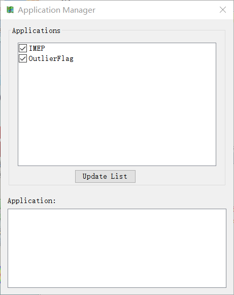

Download and Run OutlierFlag¶
Outlier Flag could be downloaded freely from the website http://www.meteothinker.com . It can be run as a standalone desktop program or as a toolbox application in MeteoInfoLab. The complete Outlier Flag desktop package should, after uncompression, include the following items:
- Outlier Flag executable file called “OutlierFlag.exe” for Windows system.
- Outlier Flag plugin library file called “Outlier Flag.jar”.
- Configure file called “config.xml”.
- Library files in a folder called “lib”.
- Splash file called “splash_OF.png’.
On Windows paltform, you can launch OutlierFlag desktop by double-clicking “OutlierFlag.exe” file directly.
- The complete Outlier Flag toolbox package should, after uncompression, include the following items:
- Outlier Flag plugin library file called “Outlier Flag.jar”.
- Configure file called “config.xml”.
- Jython files called “__init__.py” and “qaqc.py”.
- Sample data files in a folder called “sample”.
The unzipped OutlierFlag folder should be moved into toolbox folder in MeteoInfo directory.
And add following code in toolbox.py file:
import OutlierFlag.qaqc as qaqc
Load OutlierFlag application in MeteoInfoLab¶
Open MeteoInfoLab program. Click Apps -> Application Manager menu to open Application
Manager dialog. Click Update List botton and OutlierFlag will be viewed in Application
list. Check the OutlierFlag item to load the application.
